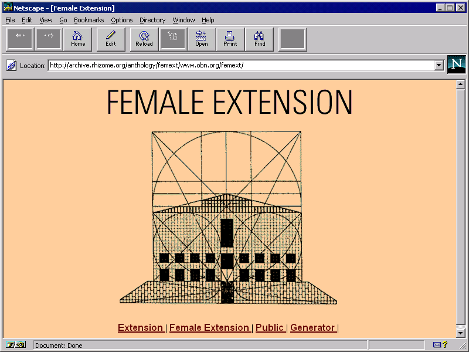
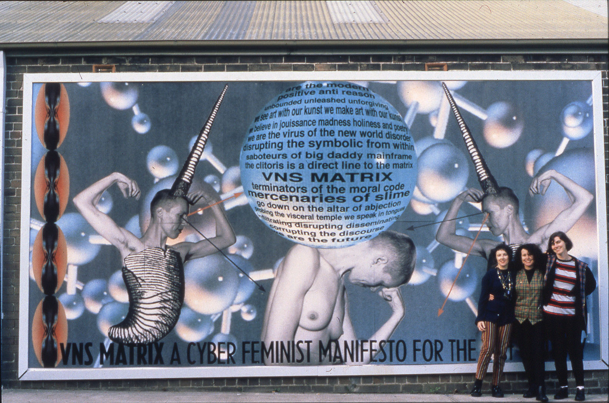
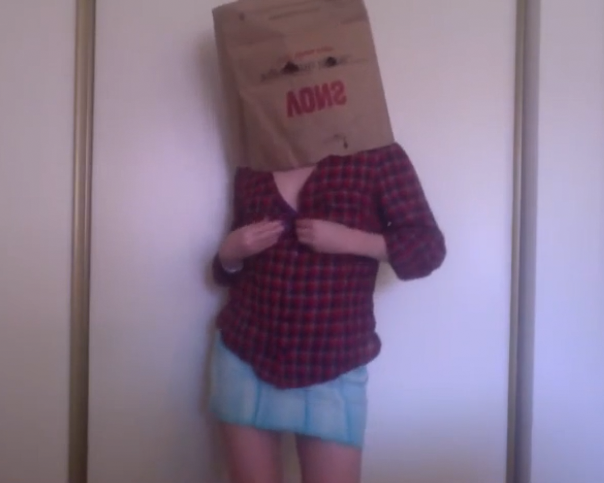
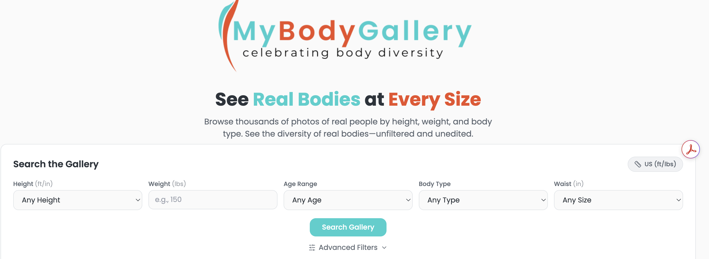

My exhibition will show how women have been viewed recently and how they explore the internet. The net art works that I chose show how women can portray themselves however they wish, without having to feel restricted or controlled in any way. Beginning from the early 1990s to more recent pieces, they show how women have used the internet to challenge gender norms and criticize how their viewed online. Earlier net art works focus more on directly criticizing gender bias and the patriarchy, while later works focus more on your identity as a woman, beauty standards, and gender expectations. Despite the differences, all of the net art works connect through their focus on how women reject control, and expectations in a digital space. The net art works all come together to show how women use the internet to discuss beauty standards, express themselves, and challenge society’s expectations.

Female Extension
Cornelia Sollfrank, 1997
Her piece touches on gender bias in art, as she created 289 fake female artists and remixed HTML from other sites to create what she calls “data trash”. She entered them into a competition to win a prize for net art. However, despite her multiple entries, three men won. The artwork reminds viewers how society consistently awards men, regardless of women’s efforts.

A Cyberfeminist Manifesto For The 21st Century
VNS Matrix (Josephine Starrs, Julianne Pierce, Francesca da Rimini, and Virginia Barratt), 1991
It was created using collaborative, plagiaristic, drug-fueled, and pornographic language. It was seen as adopting propaganda as art in 1991.

It Is I, Ann Hirsch: horny lil feminist
Ann Hirsch, 2014 to 2015
The piece uses the title "ButterFace," meaning a person who has an attractive body but not a face, which is why the woman is wearing a paper bag over her face. The piece explores how women present themselves online and how they must deal with being expected not only to have a “nice” body but also a “nice” face. It shows how it’s hard to balance your desire with feminist beliefs.

My Body Gallery
2022
This is a website where users can see real, unedited pictures of women based on their own demographics and physical characteristics. This allows people to avoid edited content posted online, such as photoshopped images, and view real photos of women’s bodies.